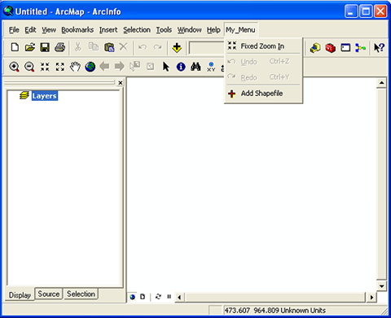

This sample demonstrates how to create a base or root-level menu with submenu functionality. The root-level menu is created by inheriting the BaseMenu class from the ESRI.ArcGIS.ADF.Local assembly's ESRI.ArcGIS.ADF namespace and by implementing the ESRI.ArcGIS.Framework.IRootLevelMenu interface. The submenu functionality is created by using existing ArcGIS functionality that is accessed by the class identifier (CLSID) and ProgID in ArcMap. Additionally, a custom command is created and is accessed as a submenu. This sample contains all of the code demonstrated in the Adding a custom menu created in .NET to ArcGIS for Desktop walkthrough.

Screen shot of the Customize dialog box.
Menu command in ArcMap." />
Screen shot of the MyMenu command in ArcMap.
Walkthrough: Adding a custom menu created in .NET to ArcGIS for Desktop
Creating toolbars and menus
Creating commands and tools
| Development licensing | Deployment licensing |
|---|---|
| ArcGIS for Desktop Basic | ArcGIS for Desktop Basic |
| ArcGIS for Desktop Standard | ArcGIS for Desktop Standard |
| ArcGIS for Desktop Advanced | ArcGIS for Desktop Advanced |